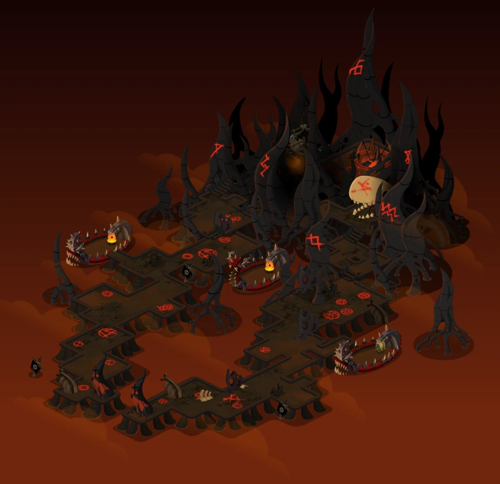

Cronología hecha por Uelman traducción y correcciones por Drarios y Nelson Magno
LA ÉPOCA PRIMITIVA

Al principio, solo existía la nada, hasta que un día dos seres se cruzaron: La Gran Diosa de Wakfu, también conocida como la diosa Selatrop, y el Gran Dragón de la Estasis. Los dos seres bailaron y del encuentro nació el Krosmoz, un lado lleno de Wakfu, el fuego de la creación, y el otro de Stasis, el fuego de la destrucción.
De estas dos energías, nacieron dos dragones: Prismaradona al lado del Wakfu y Thanatena del lado de la Estasis.


Entonces, las Nordes, tres hermanas que tejen el destino de los mortales, se acercaron a Thanatena con un trato.

Le pidieron que creara Externam, a cambio nunca se separaría del lado de su hermano Prismaradona. Thanatena estuvo de acuerdo, por lo que ella y su hermano organizaron el universo.

En el extremo cubierto por el Wakfu de la Gran Diosa, Prismaradona creó el Incarnam, donde las almas encarnarían en la espalda de este dragón.

El extremo cubierto por la Stasis del Gran Dragón, Thanatena creó Externam, donde las almas serían conducidas a través del río Akeranzu hacia una necrópolis llamada el Reino Gris donde gobierna Thanatena, y donde las almas recibirán juicio, ya sea para ser enviadas de regreso a Incarnam en globos aerostáticos y reencarnar, o ser catapultadas fuera del Krosmoz en el Olvido.
La necrópolis está rodeada por el destructivo fuego negro del Gran Dragón, pero se mantiene a salvo gracias a las llamas blancas de la creación.

Por debajo de los planos de Incarnam y de Externam. De los sueños de Prismaradona, nació el Plano astral, donde existirán los sueños de todas las criaturas. El hijo de Prismaradona, Draconiros, se convertirá en el gobernante de este plano.

Debajo de él, el Plano etéreo, o simplemente el Éter, un plano interseccional donde Wakfu y Stasis se equilibran.
Y finalmente, el plano material, donde nacerán y morirán las almas mortales.

Luego, comenzaron a aparecer más dragones como Prismaradona y Thanatena. Criaturas que podían, por amor verdadero, poner un huevo de dragón llamado Dofus y, al morir, renacer de él. Pero, debido a su naturaleza, nunca podrían reencarnar si alguna vez morían sin haber puesto primero un huevo.
En Incarnam, nacieron diez dioses y formaron su hogar en el subplano de Inglorium. Estos dioses eran Yopuka, Ocra, Xelor, Osamodas, Sadida, Zurcarák, Aniripsa, Feca, Anutrof y Sram.


En Externam, nacieron los Diez Demonios e hicieron su casa en el subplano de la Fab’hugruta. Ellos fueron Rushu, Rasha, Medoroziam, Helzbeth, Nihile, Vaal'enthia, la Reina cornuda y 3 más que aún se desconocen.


Le siguieron otros espíritus menores, poblando el Plano astral y el Éter. Y finalmente, las almas comenzaron a encarnarse, convirtiéndose en mortales en el plano material.

Las primeras de ellas nacerían de una segunda danza de la Gran Diosa y el Gran Dragón, y fueron nombrados el pueblo selatrop. Los primeros seis selatropes nacieron de huevos de dofus, junto a un dragón gemelo, y fueron conocidos como el Consejo de los Seis. Los nombres de los selatrop eran Yugo, Chibi, Mina, Qilby, Glip y Nora, y sus respectivos dragones eran Adamai, Grugaloragrán, Faeris, Shinonome, Balthazar y Efrim. Solo Qilby nació con una habilidad especial: después de renacer de su Dofus, conservaría todos los recuerdos de su vida anterior. Con el tiempo, esto lo volvió loco.


Esta civilización prosperó, y un día llegó una nueva civilización mecánica: los mecasmas.

Las dos especies coexistieron, hasta que un día Qilby robó el corazón del Mecasma más joven, Orgonax, para crear una poderosa herramienta capaz de cosechar cantidades ilimitadas de wakfu: el Selacubo.


El Consejo de los Seis se vio obligado a enviar a sus niños a otra dimensión fuera del tiempo, Amrub, y sacrificaron su planeta para impulsar la nave espacial Zinit, escapando a otro planeta lejano.

En algún momento incierto, los Diez Dioses se enfrentaron a la Gran Diosa Selatrop por haber creado su propia especie exclusiva, así que la exiliaron.
La Gran Diosa Selatrop fue aprisionada en el Necromundo, un mundo fallido creado por los Diez dioses cuya población fue convertida en zombis hambrientos de Wakfu por el mal uso que Toross hizo de los dofus de ese mundo.

Sin embargo, los selatropes prosperaron una vez más en su nuevo hogar, después de haber traído a los más jóvenes de regreso.
Con el propósito de apaciguar a su hermano Qilby después de que el Consejo prohibiera sus experimentos con ciertos artefactos de Stasis, Chibi construyó una isla artificial donde su hermano Qilby pudiera continuar con sus experimentos.

Pero después de que Chibi nombrara a Yugo como su sucesor, la ira de Qilby se encendió. Así que cuando Chibi murió y Yugo se convirtió en rey Selatrop, Qilby decidió reanudar sus experimentos con el artefacto de Stasis y utilizó el selacubo para lograrlo.

Debido al uso del selacubo por parte de Qilby, Orgonax pudo rastrearlos y los atacó de nuevo. Durante el conflicto, los jóvenes selatrop fueron enviados una vez más de vuelta a Amrub. Yugo luego descubrió las fechorías de Qilby, y finalmente lo selló en una Dimensión Blanca a una eternidad de soledad.

Del Consejo solo sobrevivieron tres dragones: Balthazar, que se fue a Amrub para cuidar de los niños. Faeris que mantuvo el Dofus de Qilby y Shinonome de las manos equivocadas. Y Grugaloragrán, que protegería el Dofus de Yugo y Adamai hasta su eventual renacimiento.
Mientras tanto, el hijo de Thanatena, Rathrosk, viajó por el Krosmoz y conoció a Aure, el primer fénix.


Pronto se hicieron amigos y viajaron juntos, y se enamoraron Rathrosk engendró el Dofus Plateado.

Pero un día Aure falleció y el dofus comenzó a brillar. Entonces, como un milagro, Aure renació de sus cenizas y se convirtió de esta manera en inmortal.

No dispuesto a seguir compartiendo su reinado con sus hermanos, Rushu decidió asesinar a todos los demás grandes demonios. La mayoría de las veces lo consiguió, y solo Medoroziam fue capaz de escapar al plano material. Debilitado, se encontró con el hueso de un dios muerto, y decidió enterrarlo en un planeta cercano, que por pura casualidad era el mismo en el que residieron los Selatrop por última vez.

Pero al excavarlo, abrió una grieta entre este mundo y la Fab’hugruta. El demonio colocó un letrero que decía "Aquí no hay nada" y finalmente se desvaneció.
Helzbeth, a pesar de su muerte, permaneció como la líder de su culto, los devastadores, que utilizan naves demoníacas vivientes, los Kar'draks, para navegar en el Sh'tyx, una serpiente de río nacida de una pesadilla de Thanatena que conecta la Fab’hugruta con el río Akeranzu. Ahora viajaba por el Mar de Polvo, habiendo hecho del Archipiélago de los devastadores su hogar.



Rasha, de quien se decía que era más poderoso que Rushu, fue sellado con una espada y se le dio el nombre de Rime. Esta espada le daba a su portador la capacidad de moverse de una dimensión a otra, siempre y cuando se alimentara con dulces y golosinas. Rasha afirmó que quien lo aprisionó en la espada no fue Rushu sino el dios Yopuka

Un ser conocido como Corrupción viajó al Reino de la desesperanza, la antigua tierra de Vaal'enthia, y revivió a la reina demonio con la forma de una planta demonio. Vivían juntos y eran bastante cercanos, pero finalmente Corrupción desapareció, dejando a Vaal'enthia pudrirse, con lo que su poder fue desvaneciéndose al estar atrapada en las ruinas de su palacio.


Mientras Osamodas viajaba por el Krosmoz, sus tres dragones encontraron el mismo mundo que Medoroziam había encontrado antes, y antes de que Osamodas pudiera detenerlos, comenzaron a terraformarlo.

Ahora que el mundo estaba listo para una nueva vida, Osamodas llamó a sus compañeros dioses para que comenzaran un ritual. Todos se separaron en dos grupos, uno al lado de Helioboros, los dioses del fuego blanco: Zurcarák, Aniripsa, Yopuka, Ocra y Feca. El otro al lado de Uronigrido, los dioses del fuego negro: Sadida, Osamodas, Anutrof, Sram y Xelor. Cada dios ofrecía sus propios dones a sus futuros seguidores, y así el mundo comenzó a llenarse de vida. En ese momento, este planeta pasó a llamarse Mundo de los Diez.

Los dragones de Osamodas dotaron el mundo de magia. Helioboros, el dragón blanco, insufló el fuego blanco en el mundo, el fuego de la creación, y de él nacieron tres nuevos dragones blancos: Dardondakal, Gresgaulian y Crulakrakoss.


Uronigrido, el dragón negro, inspiró el fuego negro en el mundo, el fuego de la destrucción, y de él nacieron tres nuevos dragones negros: Grugalorasalar, Gárgrolon (del francés Gargoylone) y El-Que-No-Debe-Ser-Nombrado.


Uronigrido, el dragón negro, insufló el fuego negro en el mundo, el fuego de la destrucción, y de él nacieron tres nuevos dragones negros: Grugalorasalar, Gárgrolon y El-Que-No-Debe-Ser-Nombrado. Grugalorasalar ofreció a cada uno de sus hermanos una parte de la oscuridad del mundo: Gárgrolon gobernaría sobre las profundidades del mundo, El-Que-No-Debe-Ser-Nombrado gobernaría sobre las profundidades del mar abisal, y Grugalorasalar gobernaría sobre el cielo nocturno.
Y así Gárgrolon se hundió profundamente en la tierra, pero El-Que-No-Debe-Ser-Nombrado, que había nacido como fuego negro viviente sin cuerpo, se negó en el último segundo, buscando un mortal que poseer, habiendo sentido la presencia de un alma interesante.


Finalmente, Spiritia, el dragón multicolor, hijo de Prismaradona, insufló la Brisa Cuadramental al mundo. Y de cada elemento respectivo, nació un dragón: Ignemikhal, Aguabrial, Aerafal y Terrakurial.
Algunas leyendas afirman que la Brisa Cuadramental ya existía en forma de aliento de Prismaradona, o bien otras cuentan que apareció después al momento de la creación de los cuatro dofus elementales

Para entonces, Rushu había creado sus propios demonios los fab'huritu a partir de almas robadas en su camino a Incarnam. Pero los dioses, temiendo una invasión, le hicieron firmar un pacto de no invasión, asegurándose de que Rushu y sus criaturas permanecieran en su dimensión natal. Mientras el rey demonio cumpliera su palabra, claro.

Zurcarák, o más bien su forma y personalidad opuestas, Uginak, viajó por el Mundo de los Diez y descubrió el hueso del dios muerto que Medoroziam había enterrado. Lo masticó, con sus mandíbulas llameantes, y de sus pedazos nació un nuevo culto, el pueblo uginak. Y así los zurcarák y los uginak lucharían, como perros y gatos, sobre cuál de sus dioses es el verdadero.


Una civilización que adoraba a Osamodas en su forma de Oktapodas apareció en el área de Sufokia de la Era Dofus. Descubrieron el antiguo templo selatrop de Leonora y su tecnología, y desaparecieron en el mar, siendo conocidos como la misteriosa “gentes del mar”. Este éxodo probablemente se debió a su conflicto con los Trithones (o alternativamente los Trithones fueron rechazados por él). Zellina, una santa de día, afirma, sin embargo, que inundó la ciudad en el mar.


Imagirorukam, un dragón blanco y negro, llegó al Mundo de los Diez e hizo de la isla de Pandala su hogar. La isla también atrajo a muchos espíritus y yokai, así como a dioses menores como Pandawa, que convirtió a los primitivos golosotes en sus seguidores.
Los espíritus kianzhis trajeron consigo el conocimiento de la escritura, por lo que el tanuki Tanukang Jei inventó la caligrafía


En un momento después de miles de años, Imagirorukam sintió una perturbación en el futuro que puso a Pandala en peligro, y decidió regresar al plano astral para rejuvenecer y recuperar su fuerza. Para que no cayera en el olvido, dejó su dofus moteado en manos de Pandawa, separándolo en dos dofus: el Dorigami y el Domakuro. Su partida también llevó a que los espíritus y los yokai se desvanecieran. Cuando el dragón finalmente regresó, como los dofus habían sido separados en dos, él también fue separado en dos dragones, Imagiro y Orukam.
En su viaje a través del Krosmoz, Rathrosk y Aure llegaron al Mundo de los Diez. Allí, buscando convertirse en un dios y unirse al Panteón, el dragón hizo un trato con los Diez Dioses. Se convirtió en Mano Gris, el verdugo de su voluntad, castigando a cualquiera que cometiera blasfemia contra ellos. Horrorizado por su decisión, Aure decidió separarse de él. Con la ayuda de Thanatena, viajó por el mundo construyendo estatuas de Fénix para ayudar a los muertos en su viaje al más allá, o para ayudar a aquellos cuyo momento aún no ha llegado a encontrar el camino de regreso a la vida.

El rey Árzodan de Valonia derrota por sí solo a un dragón que aterrorizaba su reino y declara su independencia de los dioses, causando la destrucción de templos en toda la tierra. Los dioses envían a Rathrosk, iracundo porque el dragón asesinado era su amigo, que usa su aliento para maldecir a Árzodan y sus caballeros. Aquellos que mueran en la tierra donde Rathrosk desató su aliento gris se convertirán en muertos vivientes. La leyenda de Árzodan era lo suficientemente grande como para que su lanza destruida, Heimër, se conservase en el Relicario de Externam.

Thanatena recompensa a la gran guerrera sacrógrita Sigrun, que se convierte en el primer Valquíride y recibe a Heimër. El artefacto ha crecido en poder gracias a la leyenda de Árzodan y muestra visiones de Sigrun del futuro. Siglos más tarde, Sigrun recibe una visión de un cataclismo que los dioses no podrán detener, y decide enviar la lanza de vuelta al Mundo de los Diez para advertir a los mortales.


El impacto de la lanza convierte a Valonia en un archipiélago, y los aventureros son enviados a investigar. Once aventureros sobreviven lo suficiente como para echar un vistazo a la profecía de la lanza, empujando a uno de ellos a saltar de la montaña y a otros tres a abandonar su búsqueda, alegando que se trata de una estratagema de Rushu. Pero siete de estos aventureros, algunos de una fe menor o incluso infieles (aniripsa, alguien de Amakna, pandawa, anutrof, sadida, sacrógrito y un taponano), llegan a la cima y descubren a Heimër, ahora conocida como la Lanza Original, recibiendo la profecía completa. Deciden comenzar un nuevo culto con el único objetivo de prepararse para luchar contra este cataclismo, y hacen un juramento, convirtiéndose en los primeros Forjalanzas. Nascerita usa el poder de la Lanza Original para forjar siete Lanzas del Juramento, una para cada miembro fundador: Noa, Sigel, Jormun, Elding, Ydra, Muspel y Mani.
Nascerita abandona sus estatuas reales para dedicarse a la causa forjalanza después de que su marido, el rey taponano Skori Blancabirra, rechazara sus nuevas creencias
Cansada de vagar por Externam, la Reina cornuda reencarnó ilegalmente en el Mundo de los Diez con la ayuda de Sram, quien más tarde la traicionó. Por romper las reglas de la vida y la muerte, Rathrosk la persiguió. Durante su tiempo en la clandestinidad, el demonio se encontró con Terrakurial en su bosque. Pronto se hicieron amigos y, en un intento por impresionar al dragón, ella cometió varias masacres, lo que le valió la ira de Ocra y le dio su ubicación a Rathrosk. La Reina cornuda escapó de nuevo al bosque, donde lucharon hasta llegar a un punto muerto. Terrakurial logró llegar a un acuerdo: el demonio no sería enviada al Olvido siempre y cuando ella nunca saliera del bosque. Y así, Terrakurial la selló en ámbar con su aliento amarillo de tierra, para salvarle la vida.

Gúltar, el hijo de Yopuka, probablemente nació mucho antes de la creación del Reloj de Xelor. Después de salvar su ciudad cuando era niño, se convirtió en un gran héroe, y un día conoció a tres hermanas brujas, se casó con las tres y formó una familia.


Pero fue atacado por Katar, un adepto de una diosa menor llamada Sacrógrito, que había sido poseído por lo que quedaba de Medoroziam, ahora una maldición parasitaria que se alimentaba del odio. Mató a la familia de Gúltar y se batió en duelo con él, siendo asesinado en el proceso y transmitiendo la maldición al semidiós. Gúltar obtuvo entonces el título de El Bárbaro. Por las atrocidades que cometió entonces, Gúltar fue capturado y sellado en una torre mágica.


La dragona Cocabulia, creada por Osamodas a partir del barro de los pantanos dio origen a una civilización de cocodrilos que iniciaron un imperio en el Archipiélago de las Escamas.[26] El Archipiélago de las Escamas se convirtió en el hogar de varias divinidades menores: Ixchelonia (diosa de la luna), su esposo Kinitichi (dios del sol), Chaklapok (dios de la sangre y el agua), Oyukipoca (diosa de los miauguares) y Araknas (diosa de los araknas), este último ya tenía un culto en Amakna.


Cuando una joven sadida llamada Hoja estaba a punto de ahogarse en un lago, rodeada solo de árboles, un árbol sensible decidió desarraigarse y salvarla, y se ganó el desdén del bosque por esto. Escondido en una cueva y sobreviviendo a duras penas bebiendo el agua de un lago subterráneo, el árbol se encontró con Hoja una vez más y ella le dio el nombre de Roble Blando, y un rubí mágico que le otorgó Silvosse. Pero a medida que el Roble Blando crecía en poder, un día decidió visitar el pueblo natal de la niña y fue atacado, y en su rabia destruyó todo. Regresó al bosque y comenzó un reinado de terror, convirtiendo a los humanos en abráknidos. Hoja buscó venganza y fracasó, y en ese momento intervino Silvosse. Razonó con Roble Blando, y le pidió que usara sus poderes para un mejor propósito, dándole el papel de guardián del bosque, protegiendo la naturaleza contra los leñadores.


Brutas fundó la ciudad de Astrub, reagrupando a los mejores mercenarios del Mundo de los Diez. Pero habiéndose ganado la ira de los dioses, Rathrosk es enviado a propagar una epidemia sobre ellos. El Caballero del Otoño, Sigrid de Astiriz, sube al pico más alto de Astrub y apunta su espada hacia el cielo en desafío a los dioses. Rathrosk descendió para luchar contra ella por su transgresión, pero el caballero se negó a luchar. Poco después, el dragón y el caballero se hicieron amigos, y juntos se convirtieron en los protectores de Astrub.
En busca de beneficios, Sram y Anutrof idearon un plan para acelerar la aparición de nuevos Dofus en el Mundo de los Diez. Convencieron a Sadida para que creara 10 muñecas divinas, asignándo a cada una la tarea de seducir a un dragón primordial.

La primera, Maminala, sedujo a Terrakurial y surgió el Dofus Ocre. La segunda, Lophapharo, fue tras El-Que-No-Debe-Ser-Nombrado, pero fracasó. La tercera, Bellodona, sedujo a Grugalorasalar y surgió el Dofus Ébano. La cuarta, Pepavara, fue a por Gresgaulian pero fracasó. La quinta, Yopo, fue tras Gárgrolon y ella también fracasó. La sexta, Razeriane, sedujo a Aerafal y surgió el Dofus Esmeralda. La séptima, Ladysally, sedujo a Ignemikhal y el Dofus Púrpura surgió. La octava, Ibago, sedujo a Dardondakal y surgió el Dofus Marfil. La novena, Lacrima, tenía la tarea de seducir a Crulakrakoss, y fracasó. La décima y última, Dathura, sedujo a Aguabrial y surgió el Dofus Turquesa. Estos fueron considerados los seis Dofus Primordiales, y trajeron armonía al Mundo de los Doce. Pero al tiempo, atrajeron los ojos de muchas criaturas poderosas en el Krosmoz.


Del odio que sentían por el dios Yopuka, los dioses Osamodas y Sadida crearon un plan para eliminarlo. Así que embriagaron a Yopuka y lo llevaron a entrar en el jardín divino de Sadida, donde Yopuka encontró a Lacrima y la abusó. Debido a que Lacrima era parte del alma de Sadida, la descendencia nacida de este encuentro representaba un hijo prohibido de dos dioses. Sadida se disgustó con Lacrima, y selló el alma del niño dentro de una multitud de máscaras, y encargó a Morld Anozer, el Yech'ti, que los custodiara. Con el corazón roto y desesperado, Lacrima empujó a Dathura, la favorita de Sadida, por un acantilado, rompiendo su corazón de ogrinas.


Otros dos dioses cometieron el mismo tabú, Hulhu, la deidad menor del miedo, y Ansoh, la deidad menor de las ventosas, tienen una descendencia: Kutulú. Con el fin de evitar que se cumpliera una antigua profecía, Osamodas tomó la forma de Oktapodas y selló al niño en la Dimensión abisal.


Utilizando los latidos sincronizados de los seis Dofus Primordiales, Xelor crea el Gran Reloj. Lo dividió en 11 meses, cada uno custodiado por un Protector de los Meses recomendado por los otros dioses. Pero Rushu agarró el reloj y lo ralentizó con fuerza, arañando un duodécimo mes y asignando a su sirviente Djaul como su protector. Y así se eligieron los protectores: Solar, protector de javián. Silvosse, protector de flovor. Menalt, protector de martalo. Siluate, protector de aperiel. Rosal, protector de maisal. Sumens, protector de juninsidor. Hécate, protectora de juliero. Pouchecot, protector de agusto. Raval, protector de septange. Maimane (“my man”), protector de octobrero. Brumario, protector de novimiembro. Y Djaul, protector de desiembro.
Además, para mantener ocupadas a tantas deidades menores como fuera posible y ralentizar sus intentos de entrar en el panteón, Xelor creó 372 días y asignó una deidad menor a cada una, dándoles el título de Santos. Pero debido a los intentos de Djaul de robar días a los otros protectores, seis santos perdieron su día, lo que les obligó a hacerse cargo de los días de más santos durante todo el año.


Finalmente, ofreció a los demonios su propia dimensión dentro del Reloj Divino, llamado el Horamundo, donde podrían actuar libremente siempre y cuando hicieran su trabajo para proteger sus horas asignadas. Llegaron a ser conocidos como los Demonios de las Horas, y sus subordinados como horademonios, a cargo de minutos, segundos y cosas por el estilo. Un día, X, el demonio de la décima hora, creó accidentalmente una grieta en el mundo material. Al ver una oportunidad en esto, Medianoche convenció a sus compañeros para que secuestraran a aventureros de varias épocas del Mundo de los Diez y los hicieran luchar en arenas mortales. Con el tiempo, Xelor se enteró y rediseñó las arenas para convertirlas en zonas de batalla a las que pudieran acceder voluntariamente los aventureros en busca de gloria.
La Edad de los Dofus
PROXIMAMENTE